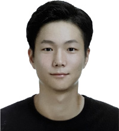

HOME > 연구소이야기 > zoom人
zoom人
연구원의 하루
- 저는 소비자 관능 조사 및 평가를 담당하고 있으며 “소비자 감성 연구실” 에서 업무를 보고 있습니다.
- 안녕하세요. 연구기획팀 연구원 이영미 입니다.
- 저는 소비자 관능 조사 및 평가를 담당하고 있으며 “소비자 감성 연구실”에서 업무를 보고 있습니다.날로 높아져 가는 소비자 요구에 대응하기 위해서는 소비자 기호 및 감각을 과학적으로 분석하여 제품 개발에 적용하는 일련의 과정이 필요합니다.소비자로부터 다양한 의견을 듣고 이를 제품에 반영할 수 있도록 하기 위해 체계적인 평가 방법과 통계 분석을 업무에 활용하고 있으며, 제품과 소비자의 상호 연계를 담당하는 역할로써의 자부심을 느끼며 일하고 있습니다.

연구기획팀
이영미 연구원
-
- 업무 시작 전, 나만의 아침 시간
- 출근 지하철의 긴 여정을 마치고 마곡나루역에 도착합니다. 소비자 조사는 몇 시간 동안 서서 패널들과 함께 진행해야 하기 때문에 많은 체력이 요구됩니다. 그래서 아침은 웬만하면 거르지 않고 근처 편의점이나 카페를 이용해서 간단하게 준비하고 사무실로 들어갑니다. 오늘은 무엇을 먹을지 내내 고심한 끝에 우유와 시리얼 바를 골랐어요. 역시, 먹으니 힘이 나네요~ 불끈!
- 남은 시간 동안, 메일을 확인하고 오늘 참여하실 패널 명단을 정리합니다. 오늘도 많은 분들이 다녀가시겠네요, 준비를 서둘러야겠어요.
-
- 샘플 확인 및 조사 준비
- 오후에 있을 조사 준비를 하나씩 시작해 볼까요~ 먼저, 패널 대기실부터 정리합니다. 오셔서 대기하시는 동안 보실 수 있는 잡지와 서적을 가지런히 놓고 TV 화면에 오늘 진행 할 품목을 영상으로 띄웁니다. 준비실에서는 조사 샘플의 상태 및 수량을 확인하고 별도의 용기에 옮겨 담습니다. 다음, 조사실에서는 테이블에 입가심 물과 설문지를 준비해 놓고 평가 상황을 녹화하는 장비도 꼼꼼히 확인해 봅니다. 마지막으로, 가장 중요한 것! 패널들께서 평가 마치고 가실 때 드리는 소정의 선물까지 준비하면 끝입니다.
-
- 개발팀과의 조사 내용 협의
- 주로 개발팀에서 제품을 가져와 조사를 진행하는 저희는 개발팀과의 원활한 업무 협의가 가장 중요합니다. 오후에 있을 조사에 대해 담당 연구원께 설명하고 확인 해야 할 제품 사항을 서로 협의하여 개발 방향을 맞춰 가고 있습니다
-
- 본격적인 조사 진행
- 제 시간에 모든 패널들이 와 주셨네요, 감사합니다. 오늘 평가해야 하는 품목과 진행과정을 간단히 소개합니다. 샘플을 시식하면서 오감을 통해 느껴지는 제품의 특성들을 크게 외관, 향, 맛, 식감으로 나누어 확인합니다. 패널이 설명하는 특성에 대해 좀 더 과학적이고 객관적으로 표현할 수 있는 용어를 찾아 정의를 내립니다.
- 또, 이를 대표할 수 있는 표준물질을 연결하는 작업까지 완료되면 오늘 모임은 마치게 됩니다. 긴 시간 동안 진행되는 조사이기 때문에, 틈틈이 쉬는 시간마다 수다가 빠지면 안되겠죠, 이번에는 어떤 내용으로 화두를 던져 볼까요? 이렇듯, 진행자는 패널들의 토의과정을 이끌어 가며 편안한분위기를 유도할 줄 아는 센스~까지 필요합니다!
-
- 조사 내용 분석 및 뒷정리
- 오늘 쓰인 용기들을 세척하고 주변 정리를 합니다. 준비 시간만큼이나 정리 시간도 오래 걸리는 것 같네요 ㅠㅠ 연구실 뒷마무리까지 마치고 사무실로 올라와 오늘 진행한 내용을 재검토 합니다. 아직 명확히 확인이 안된 부분에 대해서는 관련 문헌이나 논문을 검색해 보고 이와 비슷한 케이스를 찾아 봅니다. 객관적인 접근이 중요하기 때문에 이 같은 리서치 작업은 항상 병행하여 진행하고 있습니다.
-
- 업무 끝, 다시 나의 시간으로
- 업무가 끝났습니다. 짝짝짝~ ^^ 오늘은 멘티를 만나는 날입니다. 6시에 퇴근해서 멘티와 즐거운 시간을 보낼 생각하니 발걸음이 빨라지네요.
- 오늘 저의 하루 일과를 보셨는데, 어떠셨나요? 저의 일과는 소비자를 맞이하는 준비 작업부터 시작하여 소비자의 의견을 듣는 것으로 마무리 됩니다. 저희 롯데 연구소를 찾아 오시는 모든 소비자들이 보는 첫 얼굴이라는 생각으로 앞으로도 부단히 노력하겠습니다. 오늘 하루 수고 많으셨습니다!
- 달콤한 캔디를 먹는 사람들의 모습을 떠올리며 오늘도 즐거운 마음으로 하루를 시작합니다
- 안녕하세요. Sweets팀 김정근 연구원 입니다.
- 저는 캔디 카테고리 연구개발을 맡고 있습니다. 캔디 카테고리에는 보통 사탕이라고 부르는 스카치캔디, 목캔디 처럼 딱딱한 것을 비롯하여 부드러운 식감의 생 캔디 같은 소프트 캔디, 젤리, 양갱, 타블렛과 같은 많은 분야가 포함되어 있습니다.달콤한 캔디를 먹는 사람들의 모습을 떠올리며 오늘도 즐거운 마음으로 하루를 시작합니다
sweets팀
김정근 연구원
-
- 하루의 시작
- 2시간 남짓 걸리는 긴 출근시간 덕에 다른 사람들보다는 조금 이른 하루를 시작합니다. 오늘도 활기찬 하루를 위해 신나는 음악과 함께 버스에 오릅니다. 출근여행을 마치고 회사에 도착하면 커피를 마시며 차분하게 인터넷 강의를 봅니다. 좀처럼 늘지 않는 일본어능력 향상을 위해 저는 제 특기인 꾸준함으로 승부를 걸고 있습니다.
-
- 팀원들과의 소통은 중요합니다!
- 서로의 소소한 일상을 이야기하며 자연스럽게 회의가 시작됩니다. 업무 진행에 필요한 정보를 전달하기도 하고 팀원 각각이 진행하고 있는 제품 개발에 대한 어려운 점을 이야기 하며 문제점 해결을 위한 서로의 의견을 공유하는 시간입니다.
-
- 최고의 제품은 지속적인 노력의 결과물
- 회의를 통해 얻은 정보 및 조언을 바탕으로 진행중인 개발 제품의 완성도를 높이기 위한 방향을 설정합니다. 사용되는 각 원료의 특성, 제품의 제조공정상의 특이점, 유통과정 중의 품질의 변화 등을 꼼꼼히 사전에 체크하여 최상의 품질을 가진 제품이 되도록 만전을 기합니다
-
- 자 그럼. 시제품을 만들어 볼까요?
- 오전에 설정한 개선 방향을 토대로 시제품 테스트를 진행합니다. 연구소에서 하는 테스트는 작은 사이즈로 진행되기 때문에 정확한 양을 투입하여 오차범위를 줄이는 것이 현장에서의 오류를 줄일 수 있는 방법이라고 생각하기에 정확한 실험을 위해 집중하여 진행합니다
-
- 소재업체와의 미팅
- 빠르고 다양하게 변해가는 소비자의 욕구를 충족시키기 위해 기존의 식상한 캔디제품이 아닌 새롭고 재미있는 제품 개발을 위해 소재에 대한 공부는 중요합니다. 다양한 소재업체와 미팅을 통해 트렌드를 파악하고 그들이 가진 전문지식을 배우곤 합니다. 공부를 통해 신제품 아이디어도 문뜩! 떠오르곤 하지요
-
- 유연근무제
- 오늘도 6시에 땡 퇴근을 합니다ㅎㅎ 유연근무제를 철저하게 지키기 위해 컴퓨터에 락이 걸리기 때문이죠. 하지만 그 전에 업무마무리는 철저히 해야 한다는 것! 무엇이든 마무리가 중요하죠
- 먼저 하루를 돌아보며 테스트 결과를 정리하고 미진했던 일, 내일 해야 할 일을 정리해 봅니다. 계획대로 잘 진행되어 뿌듯한 날도 있겠지만 생각과는 다른 결과로 인해 마음이 무거운 날도 있답니다. 그런 날엔 동료들과 소주한잔?으로 풀기도 하지요ㅎㅎ 오늘은 다행이도 계획했던 일들이 잘 끝난 것 같습니다. 가벼운 마음으로 패밀리데이 즐기러 퇴근합니다
- 남녀노소 할 것 없이 누구나 선호하는 맛과 우수한 품질의 음료를 만들기 위해 동분서주 뛰어다니는 저의 일과를 소개합니다.
- 안녕하세요. 기호음료팀 김성한 연구원입니다.
- 롯데칠성음료의 RTD커피, 물, 기능성·다류 음료등의 개발업무를 맡고 있습니다. 남녀노소 할 것 없이 누구나 선호하는 맛과 우수한 품질의 음료를 만들기 위해 동분서주 뛰어다니는 저의 일과를 소개합니다.
기호음료팀
김성한 연구원
-
- 기분 좋은 하루의 시작
- 핸드폰 알람 소리에 잠에서 깹니다. 졸린 눈을 부비며, 치카치카~zzz 오늘 중요한 업무가 뭐였더라?? 생각하며 샤워를 하고 출근준비를 합니다.
- 밖에 나와 버스를 타려고 정류장에 서있으니 선선한 가을 바람에 기분이 좋아집니다. 자~ 오늘도 파이팅!
-
- 굿모닝~
- 회사에 도착하고 실험복으로 갈아입은 후 사무실에 들러 영어책을 꺼냅니다. 영어 수업은 일주일에 3번 있지만 업무와 병행하려니 여간 힘든게 아닙니다. 하지만 음료제품의 특성상 해외 제품을 많이 접하기 때문에 기본적인 영어 능력은 필수입니다. 연구소 비전인 아시아 TOP3에 걸맞은 연구원이 되기 위해서는 업무능력 외에도 언어능력이 매우 중요합니다.
-
- 시제계획 및 준비
- 오늘 시제할 제품을 확인하고 아침회의에서 나온 방향성을 바탕으로 세부적인 테스트계획을 세웁니다. 시제업무 연구원의 신제품 개발 아이디어나 품질 개선 사항을 실제적으로 현실화 시켜주는 과정이기 때문에 매우 중요합니다. 매 순간 몰두하고 집중해서 시제에 임하여야 합니다. 그렇다고 실험실 분위기가 무겁진 않고요! 대체적으로 화기애애하답니다^^ㅎ 이제 필요한 원료와 첨가물을 찾아서 놓고 배합량과 테스트 수를 다시 확인하여 준비를 마칩니다.
-
- 자~ 달려 봅시다!
- 오전에 세웠던 테스트 계획을 기초로 본격적으로 시제를 시작합니다. 테스트 중에 발생한 특이점 및 느낀 점은 자세히 메모하고 다음에 활용될 수 있도록 숙지하는 것이 좋습니다. 시제는 배합, 살균, 냉각의 과정을 거치기 때문에 보통 4~5시간 정도가 소요되고 음료는 테스트수가 많은 편이기 때문에 지치지 않으려면 평소에 체력관리를 꾸준히 해주는 센스가 필요하답니다.
-
- 시제정리 및 마무리
- 시제가 마무리 되면 시제품들은 특성에 맞게 냉장고나 창고에 보관을 합니다. 사무실에 돌아와 오후 동안에 확인하지 못했던 메일을 확인하고 관련 업무를 처리합니다. 시제 테스트내용은 따로 엑셀로 만들어서 정리하고 특이사항도 함께 기재합니다. 특이사항은 최대한 자세히 적는 것이 앞으로의 시제 진행에 도움이 됩니다.
-
- 퇴근을 앞두고
- 타이트한 하루가 저물어 갑니다. 열심히 일한 오늘을 뒤로 하고 퇴근준비를 합니다. 내일을 위해 편안하고 충분한 휴식을 취하는 것이 좋습니다. 팀원들과 인사를 나누고 집으로 향합니다
- 저는 롯데그룹 식품부문 중 제조공장의 위생안전을 위한 Auditing 업무를 맡고 있습니다.
- 안녕하세요. 제조안전팀 윤인섭연구원입니다.
- 저는 롯데그룹 식품부문 중 제조공장의 위생안전을 위한 Auditing 업무를 맡고 있습니다. 고객중심의 가치를 위해 식품사고를 사전 예방하여 보다 안전한 먹거리를 소비자에게 제공하는 것이 저의 책임입니다.
제조안전팀
윤인섭 연구원
-
- 출근준비
- 오늘도 공장 위생점검을 위해 단정한 복장은 필수 아내가 정성스럽게 다림질해준 하얀 와이셔츠에 넥타이를 매고 검은양복에 달린 롯데 배지가 비뚤지 않은지 확인합니다. 어젯밤 재우기 위해 씨름했던 아들녀석의 자는 모습을 보면서 흐믓한 표정으로 집을 나섭니다..
-
- 점검 준비
- 회사에 도착하자마자 수신메일을 확인하고 오늘 점검대상인 공장의 예전 점검 결과를 수집한 후 주요 문제점을 미리 파악합니다. 그리고 점검에 필요한 노트북, 카메라 등을 챙겨 회사에서 해당공장으로 출발합니다.
-
- 점검해야 할 공장으로 이동(출장)
- 점검해야 할 롯데식품계열사와 협력업체 공장들은 전국 곳곳에 있습니다. 공장을 이동할 때는 회사차나 자가차량을 이용합니다. 남들은 출퇴근 시간에 버스나 지하철에서 자기계발을 하지만 저는 운전 중에 영어회화 듣기를 하며 틈틈이 공부를 한답니다
-
- 현장 점검 시작
- 해당공장에 도착하면 공장장을 포함한 품질, 생산, 기술 담당자들과 함께 사전 회의를 시작합니다. 점검목적과 방법, 그리고 일정을 협의한 후 점검절차에 따라 위생모와 위생복을 착용하고 현장의 위생상태를 점검합니다. 원료가 위생적으로 보관되어 있는지, 생산과정에서 제품이 오염되지 않는지, 위생기준에 따라 작업자가 올바르게 식품을 취급하는지 등을 꼼꼼히 체크하고 기록합니다. 증거사진은 필수이고요.
-
- 서류 점검 시작
- 오후에는 공장에서 작성하는 품질, 위생, 법적 관련 서류들을 검토합니다. 품질검사성적서, 원료수불부, 공정관리 일지 등 공장에서 기록한 서류들을 하나하나씩 확인하면서 지금까지 안전하게 제품이 생산되었는지를 점검합니다.
-
- 종결회의 및 위생교육
- 마지막으로 해당공장의 관리자와 담당자들에게 공장의 문제점들을 브리핑하고 개선방안을 토론합니다. 작업장 정리정돈, 청소 등 즉시 개선할 수 있는 부분은 현장에서 바로 시정조치하고 시설보수 등의 장기 투자가 필요한 부분은 개선방법과 완료일정을 합의하여 결론을 도출합니다. 필요 시에는 관리자와 작업자를 대상으로 위생교육을 진행하기도 한답니다
-
- 가족의 품으로 갈 시간
- 점검을 마치고 사무실로 복귀합니다. 점검내용을 정리하고 보고서를 작성한 후 상사에게 결과를 보고합니다. 다음 출장을 미리 준비하고 책상정리를 한 후 바쁜 하루를 마무리합니다. 이제 회사 업무보다 더 힘들지만 생각만해도 행복한 잠자기 싫어하는 아들 녀석과의 재우기 한판승을 위해 그들을 만나러 갑니다.